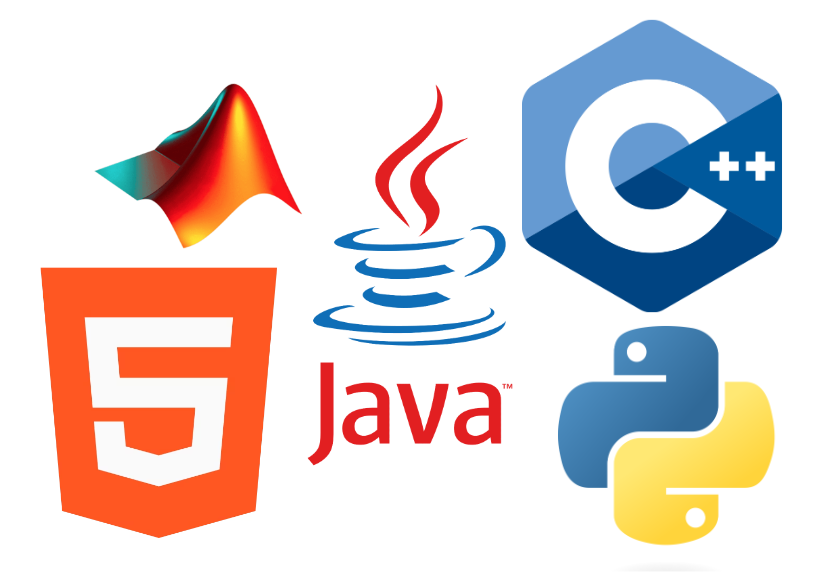

Hello, my name is Shiv. I'm a junior Cybersecurity major at the University of Maryland.
After receiving my Computer Science degree by May 2025, I plan on working as a full-time
software engineer. In terms of my coding experience, I have over 2 years of development
experience in Java and Javascript, 6 months of experience in C++ and MATLAB, and 3 months
of experience in HTML and Python. Additionally, I have over 2 years of professional experience
in data entry, web development, and data analytics. I also have field experience working in a
dynamic team environment to devleop solutions for clients as an entry-level business consultant.
Education:
University of Maryland
(Aug 2021- May 2025)

GPA: 3.71
Major: Bachelors in Computer Science, Cybersecurity
Minor: General Business, UMD Smith School of Business
Relavant Courses: Object Oriented Programming, Data Structures and Algorithms, Computer Systems, Discrete Structures, Orginization of Programming Languages
Honors: University of Maryland Honors College
Dean's List: Fall 2022, Spring 2022, Fall 2023

Programming Languages: Java, Javascript, C++, HTML, Python, MATLAB
Soft Skills: Communication, Critical Thinking, Attention To Detail, Organization, Time Management
Operating Systems: Linux, UNIX, EMACS
Frameworks: Git, Github, Flask, Jquery
IDEs: Visual Studios, Eclipse
Developed an assembler to manipulate instructions from a processor called the MAD Raisin CPU.
 Created an interactive user interface to simulate a game of blackjack.
Created an interactive user interface to simulate a game of blackjack.
 Programmed an exam generator to create and calculate sample statistics for exams with true/false, multiple choice, and fill-in-blank questions.
Programmed an exam generator to create and calculate sample statistics for exams with true/false, multiple choice, and fill-in-blank questions.
 Designed a website to showcase my personal portfolio filled with personal projects, skills, and field field experiences.
Designed a website to showcase my personal portfolio filled with personal projects, skills, and field field experiences.